GALERÍA
Personas. Procesos. Experiencias reales.
Una parte de lo que hemos creado juntos. Las fotografías pueden reemplazarse o ampliarse más adelante sin modificar la estructura del sitio.
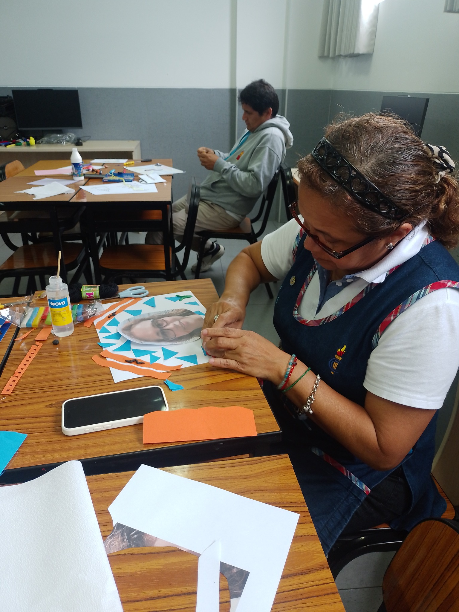
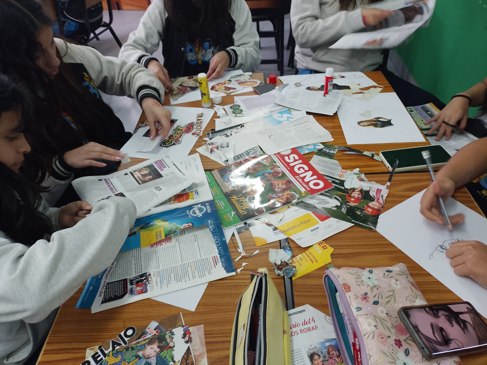
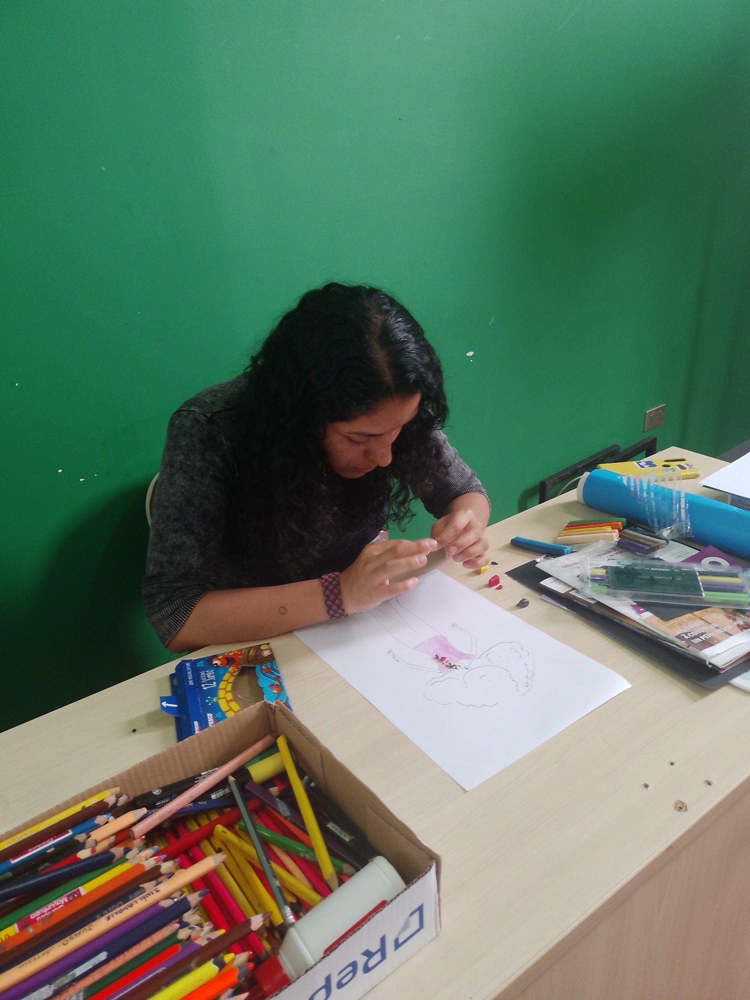
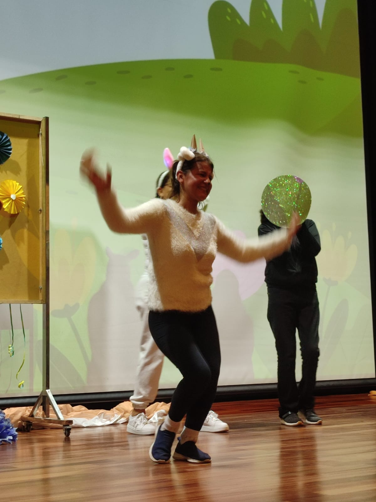
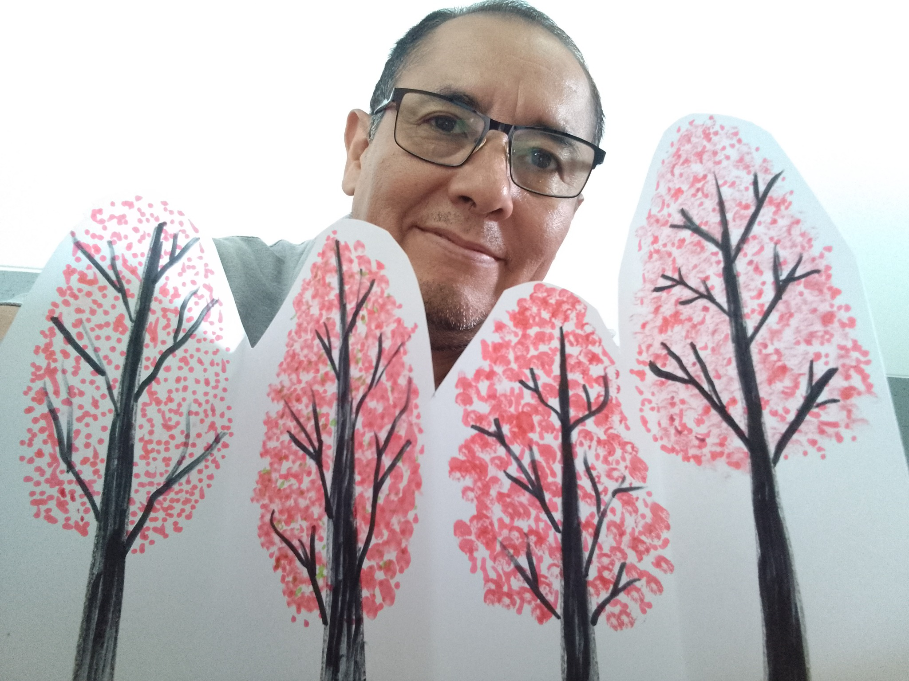
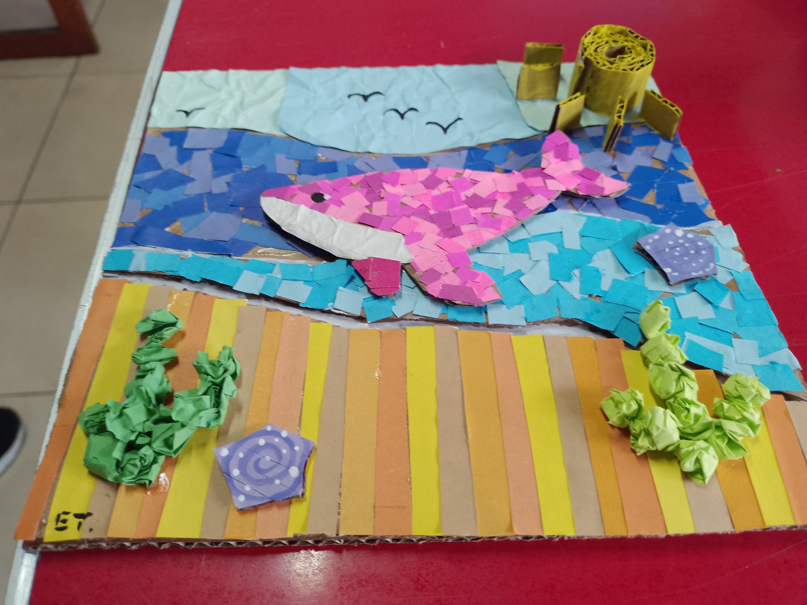
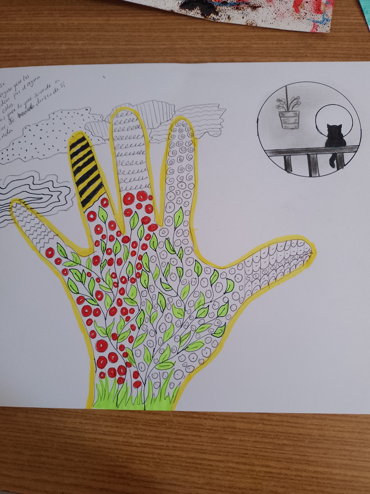
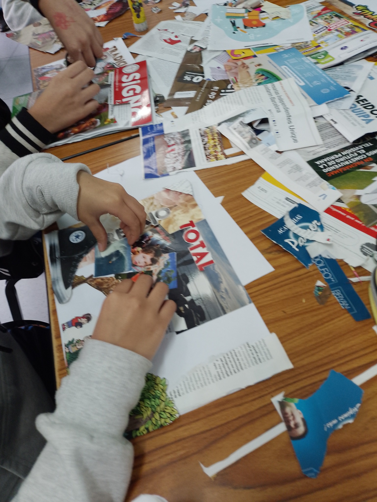
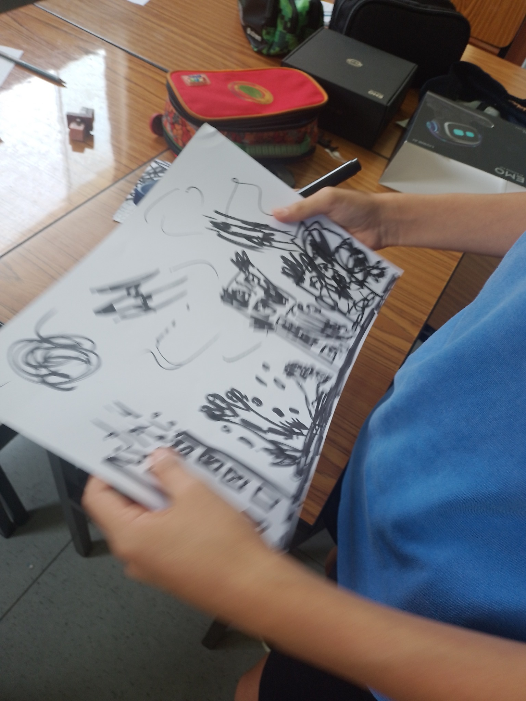
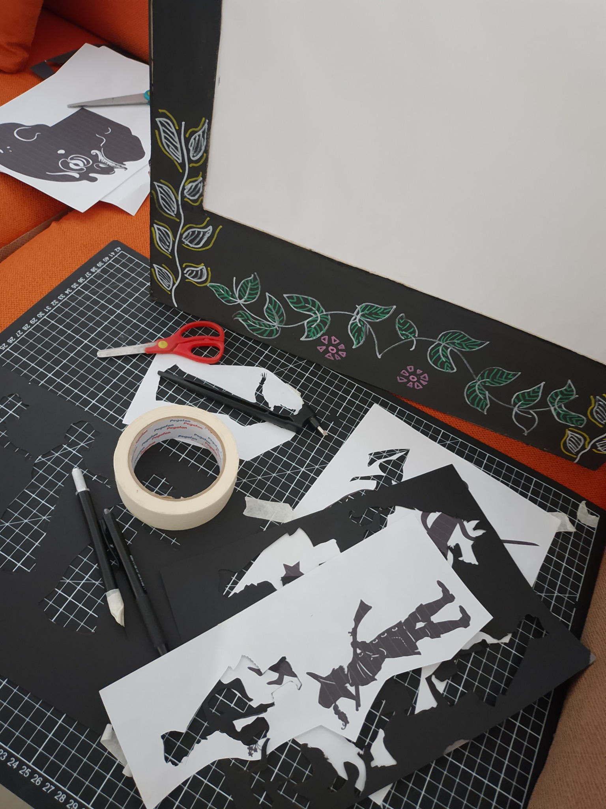
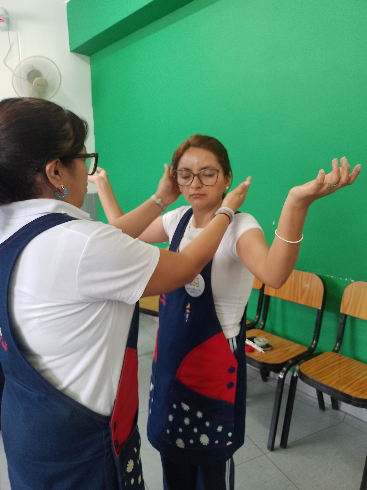
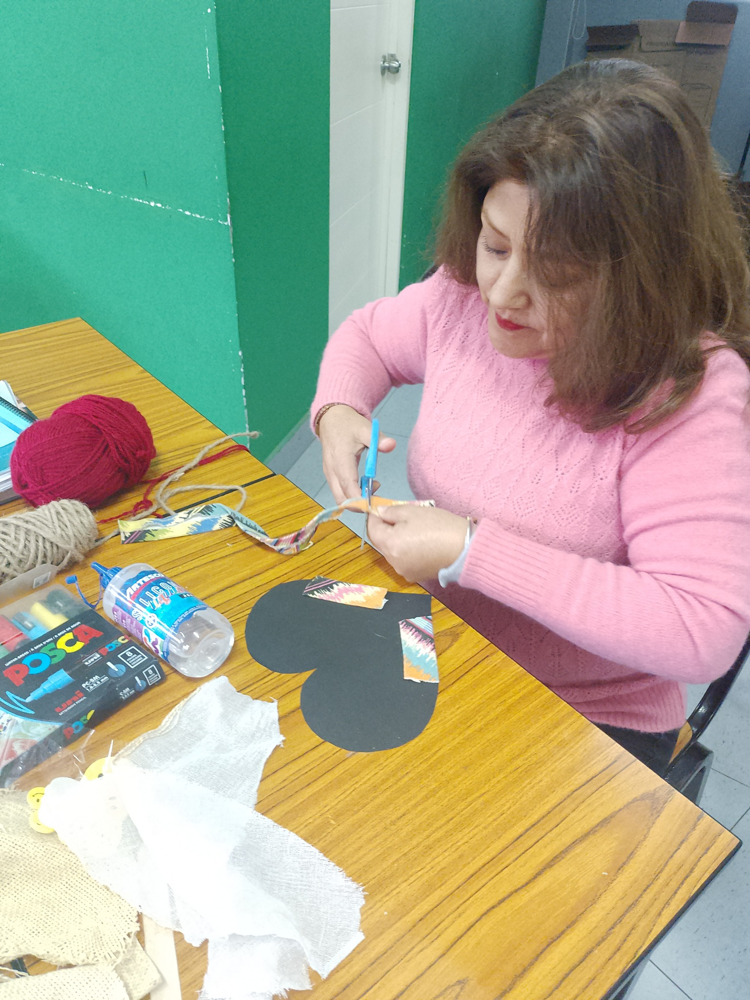
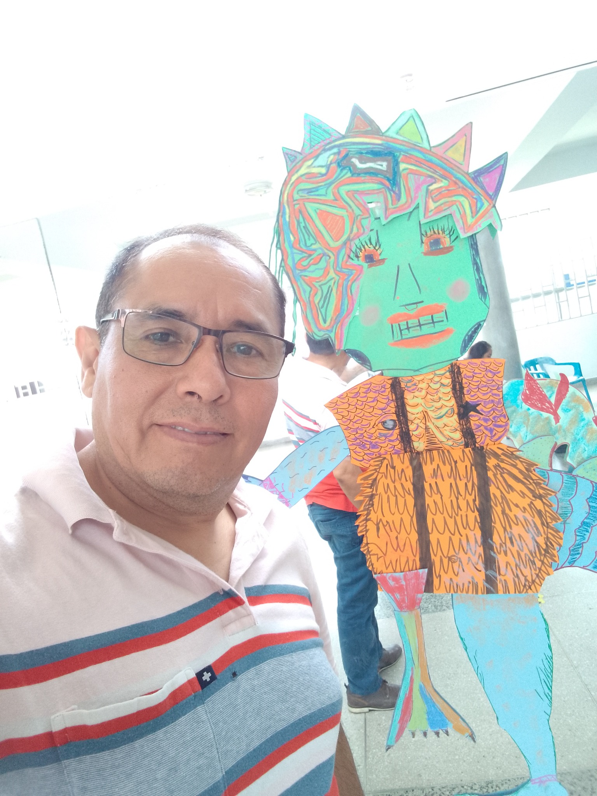
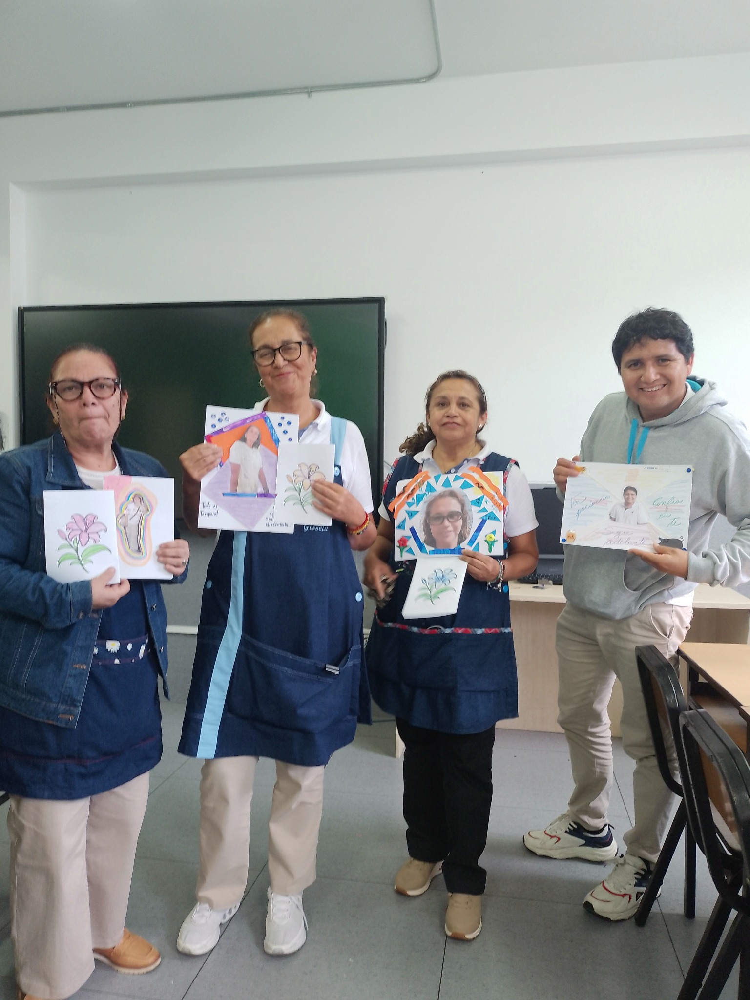